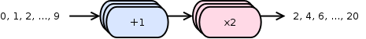

MPipe is a tiny Python module – a thin layer above the standard multiprocessing package – that lets you write multi-stage, multi-processing pipeline algorithms with remarkable ease. Consider the following workflow:
It’s a two-stage pipeline that increments and doubles numbers, each stage concurrently running three workers. Here’s how you’d code it up using the mpipe module:
from mpipe import OrderedStage, Pipeline
def increment(value):
return value + 1
def double(value):
return value * 2
stage1 = OrderedStage(increment, 3)
stage2 = OrderedStage(double, 3)
pipe = Pipeline(stage1.link(stage2))
for number in range(10):
pipe.put(number)
pipe.put(None)
for result in pipe.results():
print(result)
The above snippet runs a total of seven processes: one for the main program and six for the two stages (three processes per stage.)
Get MPipe now! Easiest way is using pip:
pip install mpipe
Check out Installation instructions for other ways of getting MPipe up and running on your system.
Start piping right away by running through the Examples. If you want a step-by-step guide to creating pipelines, read the MPipe cookbook. For theory and design, take a look at Pipeline concepts.

MPipe is a project on GitHub.